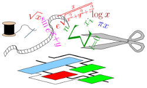

FloPoCo is a command-line tool. The general syntax is
flopoco <options> <operator specification list>
FloPoCo will generate a single VHDL file (named by default flopoco.vhdl) containing synthesisable descriptions of all the operators listed in <operator specification list>, plus possibly sub-operators instanciated by them.
To use these operators in your design, just add this generated file to your project.
FloPoCo will also issue a report with useful information about the generated operators, such as the pipeline depth. In addition, three levels of verbosity are available.
To obtain a concise list of the available operators and options, simply type
./flopoco
./flopoco IntConstMult wIn=16 c=12345
produces a file flopoco.vhdl containing a single operator for the integer multiplication of an input 16-bit number by the constant 12345.
The VHDL entity is named after the operator specification, here IntConstMult_16_12345.
./flopoco IntConstMult wIn=16 c=12345 IntConstMult wIn=16 c=54321
produces a file flopoco.vhdl containing two VHDL entities and their architectures, for the two given constant multipliers.
Several transversal options are available and will typically change the operators occuring after them in the list.
target=Virtex5 sets the target hardware family.
For a list of supported families see the command line.
We typically target the highest speed grade available for a family (see below for pipelining options).frequency=300 sets the target frequency (in MHz).name=UserProvidedName replaces the (ugly and parameter-dependent) entity name generated by FloPoCo for the next operator.
This allows in particular to change parameters while keeping the same entity name, so that these changes are transparent to the rest of the project. plainVHDL=yes instructs FloPoCo to output concise and readable VHDL, using only + and * VHDL operators instead of FloPoCo adders and subtractors.
This helps understanding the algorithms used by FloPoCo, but typically prevents or degrades automatic pipelining. useHardMult=no instructs FloPoCo not to use hard multipliers or DSP blockunusedHardMultThreshold=0.3 instructs FloPoCo to use a hard multiplier (or DSP block) if less than 30% of this hard multiplier are unused.
The ratio is between 0 and 1, such that
0 means: any sub-multiplier that does not fully fill a DSP goes to logic;
1 means: any sub-multiplier, even very small ones, will consume a DSPThe FloPoCo distributions also includes useful programs for converting the binary string of a floating-point number to human-readable form
(bin2fp) and back (fp2bin).
The
longacc2fp utility converts the fixed-point output of the LongAcc operator (see below) to human-readable form.
The floating-point format used in FloPoCo is identical to the one used in FPLibrary. It is inspired from the IEEE-754 standard.
An FP number is a bit vector consisting of 4 fields. From left to right:
The format is therefore parameterized by to positive integers wE and wF which define the sizes of the exponent and fraction fields respectively.
The utilities fp2bin and bin2fp will allow you to get familiar with the format and set up test benches.
There are two main differences between the format (wE=8, wF=23) and the IEEE-754 single precision format (the same holds for double).
Exceptional cases (zeroes, infinities and Not a Number or NaN) are encoded as separate bits in FloPoCo, instead of being encoded as special exponent values in IEEE-754. This saves quite a lot of decoding/encoding logic. The main drawback of this format is when results have to be stored in memory, where they consume two more bits. However, FPGA embedded memory can accomodate 36-bit data, so adding two bits to a 32-bit IEEE-754 format is harmless as long as data resides within the FPGA.
As a side effect, the exponent can take two more values in FloPoCo than in IEEE-754 (one for very large numbers, one for very small ones).
x-y=0 <=> x=y.
With flush to zero as used in FloPoCo, x and y can be close enough that their difference is flushed to zero, while not being equal. Note that anyway, FloPoCo provides conversion operators from and to IEEE-754 formats (single and double precision).
Numbers in the Logarithm Number System used in FloPoCo have an encoding similar to the floating-point format. It is also the same as the one used in FPLibrary.
Its fields are:
Reasonable values are 4 to 8 for wE, and 8 to 20 for wF. Other values are still allowed, including negative wE. Use at your own risk.
An operator may be combinatorial, or pipelined. A combinatorial operator has pipeline depth 0. An operator of pipeline depth 1 is obtained by inserting one and only one register on any path from an input to an output. Hopefully, this divides the critical path delay by almost 2. An operator of pipeline depth 2 is obtained by inserting two register levels, etc.
It should be noted that, according to this definition, pipelined operators usually do not directly buffer neither their inputs nor their outputs. For instance, connecting the input of a 400MHz operator to the output of another 400MHz operator may well lead to a circuit working at 200MHz only. It is the responsibility of the user or calling program to insert one more level of registers between two FloPoCo operators. This convention may be felt as a burden to the user, but it is the most sensible choice. It makes it possible to assemble sub-component without inserting registers in many situations, thus reducing the latency of complex components. Besides, different application contexts may have different policies (registers on output, or registers on input).
Two command-line options control the pipelining of the FloPoCo operators that follow them.
pipeline=[yes|no] (default yes)no, the operator will be combinatorial. If yes, registers may be inserted if needed to reach the target frequency.
frequency=[frequency in MHz]pipeline option is set, then FloPoCo will try to pipeline the operator to the given frequency.
It will report a warning if it fails -- or if frequency-directed pipelining is not yet implemented for this operator.
The philosophy of FloPoCo's approach to pipelining is the following:
flopoco FPAdd frequency=200 wE=11 wF=53 FPMult frequency=300 wE=8 wF=23-frequency option may save resources.-frequency accordingly.Note that not all operators support pipelining (utimately they all will). They are mentionned in the command-line help.